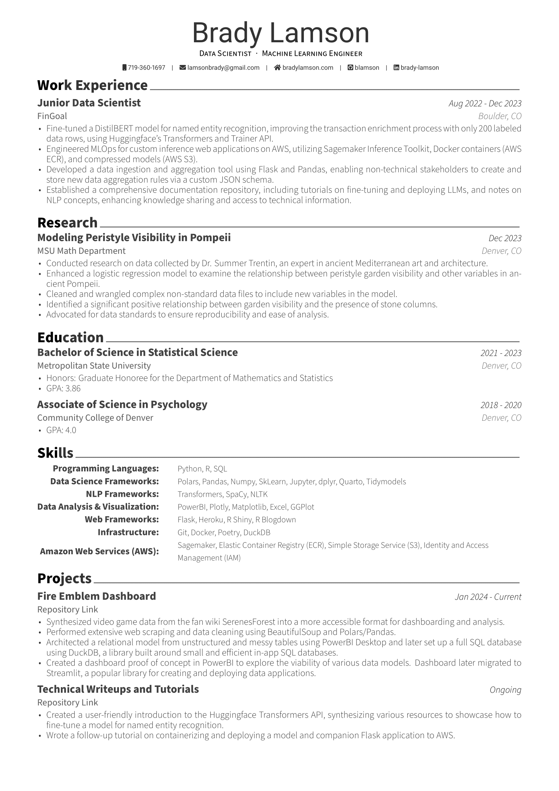

My name is Brady Lamson, I’m a Data Scientist breaking into the field. I graduated from the Metropolitan State University of Denver with my Bachelors of Science in Statistical Science with a minor in Computer Science. I was also the chosen Graduate Honoree for the Mathematics and Statistics Department. In my free time I do a lot of indoor rock climbing and watch way too many obscure low budget horror movies! (If you’re a fellow horror movie fan shoot me an email for your favorites. I’m always looking for recommendations!)
Professionally, I’ve dabbled in various data science tasks. I interned at a local financial tech company called FinGoal for a year and a half as their sole Data Scientist and learned a staggering amount. As such I am very comfortable with the usual Data Science tech stack in Python. I use a lot of Pandas, Numpy, and Matplotlib for example. For traditional machine learning I’ve used sci-kit learn primarily, but have dabbled in pytorch and tensorflow as well! My time at FinGoal got me comfortable with the usual tech stack but also got me acquainted with building end to end web applications and working with large language models. My final project there was a synergy of these two skills; hosting a fine tuned BERT model on AWS Sagemaker for the purpose of remote named entity recognition predictions on transaction data! As such, you can expect me to be comfortable with various Amazon services and working with Docker and Flask to build and deploy web applications.
Funnily enough, I came into mathematics and programming from psychology previously. A big leap, but there was something so satisfying about the problem solving inherent in the world of tech. Working out some frustrating programming bug and getting something to work just makes my day sometimes. Data work even more so, as working with data really requires you to become intimately familiar with what that silly little table actually represents. I feel like a lot of people forget what story each row of that table is telling them. You can get so lost in the code and math and forget where you are. For example, in a lot of financial data each row is a transaction. A transaction made by a human being. A human being with hundreds or thousands of transactions. Each and every transaction tells you a little bit more about who they are. And these tables contain hundreds or thousands of human beings. With data science we can harmonize these stories and extract so much meaning out of them. We can learn more about ourselves and about the world this way and I’m excited to learn with others that are just as driven by this search as I am.
